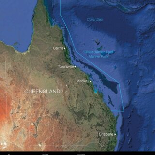

For the past few decades, there has been a growing increase of concern over microplastic pollution. In June of 2025, it was determined that 86% of pollution in the Great Barrier Reef was due to microplastic accumulation [3]. The accumulation of microplastic pollution deteriorates the reefs and, thus, causes a tremendous loss in marine life. Not only does this loss affect other marine life, but it also affects human life by depleting a source of food. Furthermore, it eliminates a natural source that serves to mitigate climate change impacts and regulate carbon dioxide levels.
This project uses deterministic population dynamics models based on ordinary differential equations to describe the interaction between coral cover and microplastic pollution. A logistic growth model is used for coral to represent growth. Microplastics are included as a stress variable that reduces coral growth through an inhibitory interaction term, reflecting experimental evidence that microplastics impair coral health. Two versions of the model are then analyzed, one without a critical threshold, here on referred to as an Allee effect, and one without. Together, these models allow the project to explore both continuous decline and threshold driven collapse, directly addressing questions about coral resilience and tipping points under increasing microplastic input . Finally, we find the critical threshold of microplastic input that results in coral reef collapse.
This project relies on data obtained from the National Center for Environmental Information [1], which includes a detailed interactive map and other data set variances surrounding marine microplastic concentrations at different depths and levels throughout the world. It also relies on data from the Australian Institute of Marine Science [2], which includes detailed quantitative values representing reef size and health.
